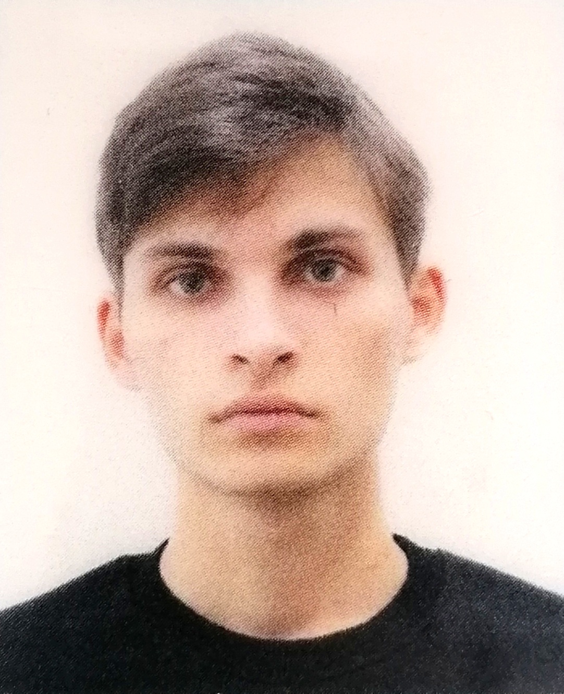

My personal website
Hello! I'm Vlad Cîrloban, a 20-year-old student with a passion for mathematics and anything related to technology, who always likes to try something new. For now, I am completing the cycle of undergraduate studies at the Faculty of Automatic Control and Computer Science within the Polytechnic University of Bucharest.
In my spare time, I enjoy blending my passion for technology by working on projects aimed at people who want to deepen their understanding of mathematics. Feel free to browse my portfolio or reach out to connect!